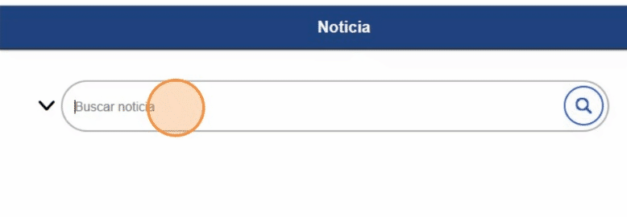
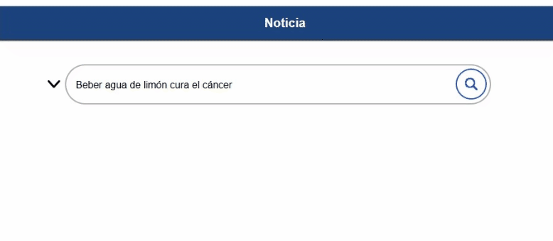
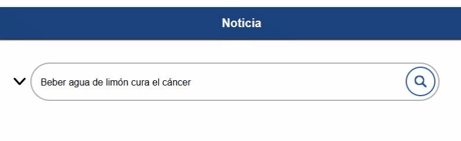
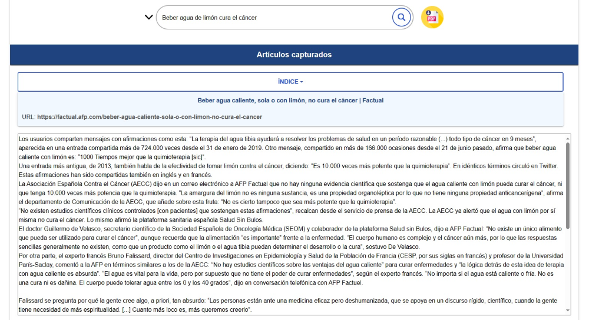
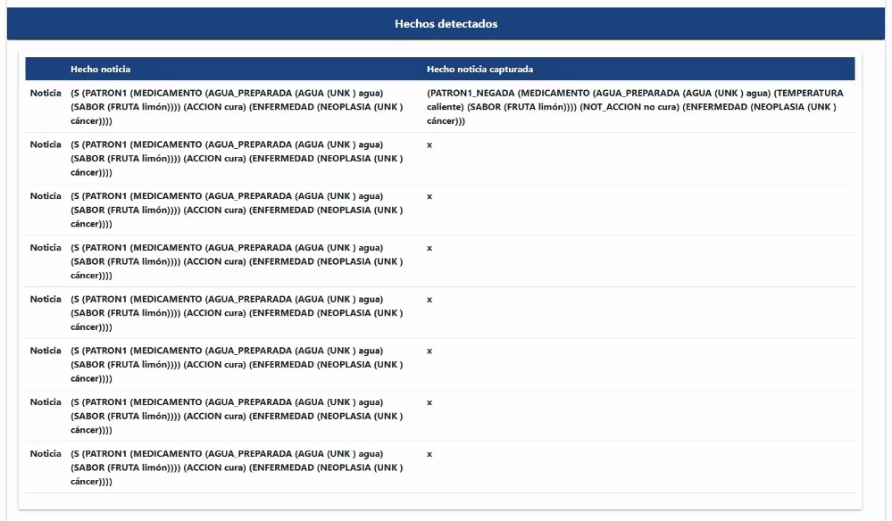

Veracia es un programa de inteligencia artificial que sirve para auxiliar a las personas en la detección de noticias falsas en el ámbito de la salud. Esta aplicación utiliza una rama de la inteligencia artificial denominada Procesamiento de Lenuaje Natural (PLN) la cual procesa información de fuentes confiables de información médica y determina si la noticia proporcionada por el usuario es verdadera, falsa o sin información disponible.
1
Da click en el campo "Buscar noticia"

2
Ingresa la noticia

2.1
Si deseas ingresar un artículo da click en la flecha de lado izquierdo

3
Da click en el ícono de la lupa

4
A continuación se mostrarán los artículos que confirman o desmienten la noticia

5
Puedes navegar a través de los artículos obtenidos mediante el índice

6
Para descargar el PDF de la información obtenida da click en el botón amarillo

7
Navega a la sección inferior para consultar la tabla de patrones detectados en cada artículo
